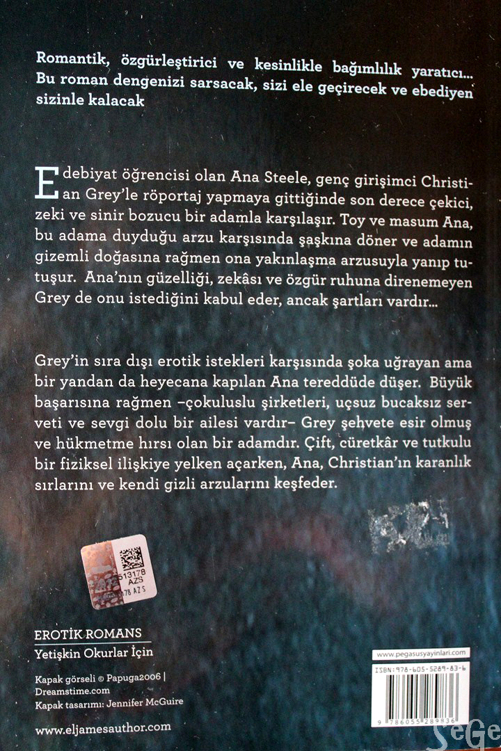

Romantik, özgürleştirici, eğlenceli ve kesinlikle bağımlılık yaratıcı... Bu roman dengenizi sarsacak, size ele geçirecek ve ebediyen sizinle kalacak
Karanlığın Elli Tonu
2.Kitap
Ruhu yaralı genç girişimci Christian Grey’in karanlık sırlarının yıldırdığı Ana Steele, ilişkilerine son noktayı koyup ABD’deki bir yayınevinde kariyerine başlar. Ama Grey’e duyduğu karşı konulmaz çekimi hâlâ aklından atamamıştır. Grey yeni bir teklifle gelince ona karşı koyamaz. Nihayet her şey daha iyiye gidiyor gibi göründüğü sırada geçmişin hayaletleri birden ortaya çıkar. İlişkileri bir kez daha tehdit altındadır. Grey içindeki şeytanlarla savaşırken, Ana da hayatının en önemli kararını almak zorundadır ve bu yalnızca tek başına verebileceği bir karardır...
Romantik, özgürleştirici, eğlenceli ve kesinlikle bağımlılık yaratıcı... Bu roman dengenizi sarsacak, size ele geçirecek ve ebediyen sizinle kalacak
Özgürlüğün Elli Tonu
3.Kitap
Toy öğrenci Anastasia Steele’in ne istediğini bilen göz alıcı iş adamı Christian Grey’le tanışması, her ikisinin de hayatlarını geri dönülmez biçimde değiştiren şehvetli bir ilişkinin kıvılcımını çakmıştır. Christian’ın sıra dışı erotik zevkleri karşısında şoka uğrayan, ondan hem hoşlanan hem de tiksinti duyan Ana, daha derin bir bağlılık istiyordur. Onu yanında tutmaya kararlı Christian, bunu kabul eder. Şimdi her şeye sahiptirler; aşk, tutku, yakınlık, servet ve sonsuz olasılıklarla dolu bir dünya. Ana, Grey’i sevmenin kolay olmayacağını ve beraberliklerinin her ikisinin de tahmin edemeyeceği zorluklar getireceğinin her zaman farkında olmuştur. Ana’nm kendi benliğinden ve bağımsızlığından ödün vermeden Grey’in yaşam stiline uyum sağlamayı öğrenmesi, Grey’inse takıntısını aşması ve kendisini altüst eden fırtınaları arkasında bırakması gerekmiştir. Ama tam her şeye sahip gibi göründükleri bir anda, talihsizlik ve kader bir araya gelip Ana’nın en korkunç kâbuslarını gerçeğe dönüştürür...
